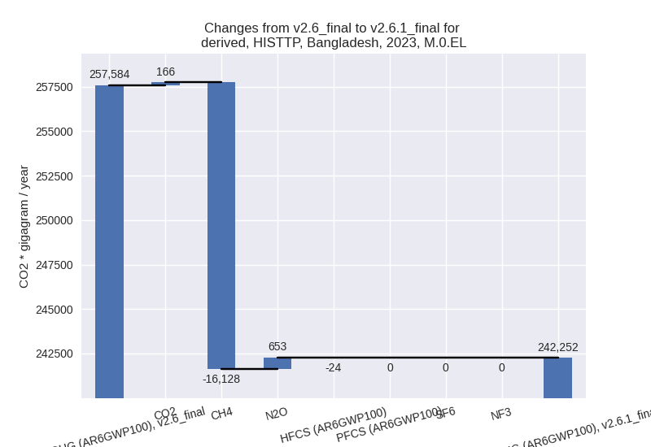

Changes in PRIMAP-hist v2.6.1_final compared to v2.6_final for Bangladesh
2025-03-19
Johannes Gütschow
Change analysis for Bangladesh for PRIMAP-hist v2.6.1_final compared to v2.6_final
Overview over emissions by sector and gas
The following figures show the aggregate national total emissions excluding LULUCF AR6GWP100 for the country reported priority scenario. The dotted linesshow the v2.6_final data.
The following figures show the aggregate national total emissions excluding LULUCF AR6GWP100 for the third party priority scenario. The dotted linesshow the v2.6_final data.
Overview over changes
In the country reported priority scenario we have the following changes for aggregate Kyoto GHG and national total emissions excluding LULUCF (M.0.EL):
- Emissions in 2023 have changed by 1.7%% (3867.67 Gg CO2 / year)
- Emissions in 1990-2023 have changed by -0.1%% (-131.40 Gg CO2 / year)
In the third party priority scenario we have the following changes for aggregate Kyoto GHG and national total emissions excluding LULUCF (M.0.EL):
- Emissions in 2023 have changed by -6.0%% (-15332.56 Gg CO2 / year)
- Emissions in 1990-2023 have changed by -7.3%% (-12425.67 Gg CO2 / year)
Most important changes per scenario and time frame
In the country reported priority scenario the following sector-gas combinations have the highest absolute impact on national total KyotoGHG (AR6GWP100) emissions in 2023 (top 5):
- 1: 4, CH4 with 3094.42 Gg CO2 / year (13.4%)
- 2: 1.B.2, CH4 with 1023.55 Gg CO2 / year (24.4%)
- 3: 2, CO2 with -584.55 Gg CO2 / year (-14.7%)
- 4: M.AG.ELV, CO2 with 466.65 Gg CO2 / year (24.1%)
- 5: M.AG.ELV, CH4 with 410.67 Gg CO2 / year (2.4%)
In the country reported priority scenario the following sector-gas combinations have the highest absolute impact on national total KyotoGHG (AR6GWP100) emissions in 1990-2023 (top 5):
- 1: 3.A, CH4 with -410.98 Gg CO2 / year (-1.4%)
- 2: 4, CH4 with 273.13 Gg CO2 / year (1.8%)
- 3: 5, N2O with -66.73 Gg CO2 / year (-11.3%)
- 4: 1.B.2, CH4 with 37.46 Gg CO2 / year (1.0%)
- 5: M.AG.ELV, CO2 with 36.66 Gg CO2 / year (2.0%)
In the third party priority scenario the following sector-gas combinations have the highest absolute impact on national total KyotoGHG (AR6GWP100) emissions in 2023 (top 5):
- 1: 4, CH4 with -13710.72 Gg CO2 / year (-47.4%)
- 2: 1.B.2, CH4 with -7048.61 Gg CO2 / year (-80.8%)
- 3: 3.A, CH4 with 4135.69 Gg CO2 / year (11.5%)
- 4: M.AG.ELV, N2O with 630.03 Gg CO2 / year (2.5%)
- 5: M.AG.ELV, CO2 with 546.92 Gg CO2 / year (24.1%)
In the third party priority scenario the following sector-gas combinations have the highest absolute impact on national total KyotoGHG (AR6GWP100) emissions in 1990-2023 (top 5):
- 1: 4, CH4 with -11718.07 Gg CO2 / year (-55.2%)
- 2: 1.B.2, CH4 with -4557.80 Gg CO2 / year (-80.5%)
- 3: 3.A, CH4 with 3155.72 Gg CO2 / year (10.1%)
- 4: M.AG.ELV, N2O with 697.11 Gg CO2 / year (3.8%)
- 5: 5, N2O with -66.73 Gg CO2 / year (-11.3%)
Notes on data changes
Here we list notes explaining important emissions changes for the country.
- There is no new country reported data for Bangladesh and changes to the CR scenario are small in their influence on total emissions. The highest changes in 2023 come from CH4 in the waste sectors and from CH4 from the oil and gas industry. Both sectors use EDGAR growth rates post 2019.
- The highest changes in cumulative emission in the CR scenario is in 3.A, CH4 (no consistent country reported data available, so FAO data is used directly). The post 2019 change in waste CH4 also affects the cumulative emissions.
- In the TP scenario the main changes are in CH4 from waste, fugitive emissions (1.B.2) and livestock (3.A). Where EDGAR and FAO data have been updated
Changes by sector and gas
For each scenario and time frame the changes are displayed for all individual sectors and all individual gases. In the sector plot we use aggregate Kyoto GHGs in AR6GWP100. In the gas plot we usenational total emissions without LULUCF.
country reported scenario
2023
1990-2023
third party scenario
2023

1990-2023
Detailed changes for the scenarios:
country reported scenario (HISTCR):
Most important changes per time frame
For 2023 the following sector-gas combinations have the highest absolute impact on national total KyotoGHG (AR6GWP100) emissions in 2023 (top 5):
- 1: 4, CH4 with 3094.42 Gg CO2 / year (13.4%)
- 2: 1.B.2, CH4 with 1023.55 Gg CO2 / year (24.4%)
- 3: 2, CO2 with -584.55 Gg CO2 / year (-14.7%)
- 4: M.AG.ELV, CO2 with 466.65 Gg CO2 / year (24.1%)
- 5: M.AG.ELV, CH4 with 410.67 Gg CO2 / year (2.4%)
For 1990-2023 the following sector-gas combinations have the highest absolute impact on national total KyotoGHG (AR6GWP100) emissions in 1990-2023 (top 5):
- 1: 3.A, CH4 with -410.98 Gg CO2 / year (-1.4%)
- 2: 4, CH4 with 273.13 Gg CO2 / year (1.8%)
- 3: 5, N2O with -66.73 Gg CO2 / year (-11.3%)
- 4: 1.B.2, CH4 with 37.46 Gg CO2 / year (1.0%)
- 5: M.AG.ELV, CO2 with 36.66 Gg CO2 / year (2.0%)
Changes in the main sectors for aggregate KyotoGHG (AR6GWP100) are
- 1: Total sectoral emissions in 2022 are 125009.33 Gg CO2 / year which is 54.7% of M.0.EL emissions. 2023 Emissions have changed by 0.8% (981.51 Gg CO2 / year). 1990-2023 Emissions have changed by 0.1% (58.71 Gg CO2 / year).
- 2: Total sectoral emissions in 2022 are 6286.72 Gg
CO2 / year which is 2.8% of M.0.EL emissions. 2023 Emissions have
changed by -8.4% (-608.11 Gg CO2 /
year). 1990-2023 Emissions have changed by -0.7% (-22.38 Gg CO2 / year). For 2023 the
changes per gas
are:
- M.AG: Total sectoral emissions in 2022 are 69253.49 Gg CO2 / year which is 30.3% of M.0.EL emissions. 2023 Emissions have changed by 0.5% (333.02 Gg CO2 / year). 1990-2023 Emissions have changed by -0.7% (-375.58 Gg CO2 / year).
- 4: Total sectoral emissions in 2022 are 26987.82 Gg
CO2 / year which is 11.8% of M.0.EL emissions. 2023 Emissions have
changed by 12.5% (3114.37 Gg CO2 /
year). 1990-2023 Emissions have changed by 1.7% (274.58 Gg CO2 / year). For 2023 the
changes per gas
are:
- 5: Total sectoral emissions in 2022 are 978.85 Gg
CO2 / year which is 0.4% of M.0.EL emissions. 2023 Emissions have
changed by 5.1% (46.88 Gg CO2 /
year). 1990-2023 Emissions have changed by -11.3% (-66.73 Gg CO2 / year). For 2023
the changes per gas
are:
For 1990-2023 the changes per gas are:
third party scenario (HISTTP):
Most important changes per time frame
For 2023 the following sector-gas combinations have the highest absolute impact on national total KyotoGHG (AR6GWP100) emissions in 2023 (top 5):
- 1: 4, CH4 with -13710.72 Gg CO2 / year (-47.4%)
- 2: 1.B.2, CH4 with -7048.61 Gg CO2 / year (-80.8%)
- 3: 3.A, CH4 with 4135.69 Gg CO2 / year (11.5%)
- 4: M.AG.ELV, N2O with 630.03 Gg CO2 / year (2.5%)
- 5: M.AG.ELV, CO2 with 546.92 Gg CO2 / year (24.1%)
For 1990-2023 the following sector-gas combinations have the highest absolute impact on national total KyotoGHG (AR6GWP100) emissions in 1990-2023 (top 5):
- 1: 4, CH4 with -11718.07 Gg CO2 / year (-55.2%)
- 2: 1.B.2, CH4 with -4557.80 Gg CO2 / year (-80.5%)
- 3: 3.A, CH4 with 3155.72 Gg CO2 / year (10.1%)
- 4: M.AG.ELV, N2O with 697.11 Gg CO2 / year (3.8%)
- 5: 5, N2O with -66.73 Gg CO2 / year (-11.3%)
Changes in the main sectors for aggregate KyotoGHG (AR6GWP100) are
- 1: Total sectoral emissions in 2022 are 115933.25
Gg CO2 / year which is 48.1% of M.0.EL emissions. 2023 Emissions have
changed by -5.9% (-7148.54 Gg CO2 /
year). 1990-2023 Emissions have changed by -7.5% (-4529.38 Gg CO2 / year). For 2023
the changes per gas
are:
For 1990-2023 the changes per gas are:
The changes come from the following subsectors:- 1.A: Total sectoral emissions in 2022 are 113528.61 Gg CO2 / year which is 97.9% of category 1 emissions. 2023 Emissions have changed by -0.1% (-97.29 Gg CO2 / year). 1990-2023 Emissions have changed by -0.0% (-10.14 Gg CO2 / year).
- 1.B.1: Total sectoral emissions in 2022 are 594.76
Gg CO2 / year which is 0.5% of category 1 emissions. 2023 Emissions have
changed by -0.5% (-2.84 Gg CO2 /
year). 1990-2023 Emissions have changed by 5.9% (25.82 Gg CO2 / year). For 1990-2023
the changes per gas
are:
There is no subsector information available in PRIMAP-hist. - 1.B.2: Total sectoral emissions in 2022 are 1809.89
Gg CO2 / year which is 1.6% of category 1 emissions. 2023 Emissions have
changed by -80.4% (-7048.41 Gg CO2 /
year). 1990-2023 Emissions have changed by -80.0% (-4545.06 Gg CO2 / year). For 2023
the changes per gas
are:
For 1990-2023 the changes per gas are:
There is no subsector information available in PRIMAP-hist.
- 2: Total sectoral emissions in 2022 are 6471.15 Gg
CO2 / year which is 2.7% of M.0.EL emissions. 2023 Emissions have
changed by -5.6% (-404.24 Gg CO2 /
year). 1990-2023 Emissions have changed by -0.7% (-30.16 Gg CO2 / year). For 2023 the
changes per gas
are:
- M.AG: Total sectoral emissions in 2022 are
101040.99 Gg CO2 / year which is 41.9% of M.0.EL emissions. 2023
Emissions have changed by 6.0%
(5842.63 Gg CO2 / year). 1990-2023 Emissions have changed by 4.7% (3916.13 Gg CO2 / year). For 2023 the
changes per gas
are:
For 1990-2023 the changes per gas are:
The changes come from the following subsectors:- 3.A: Total sectoral emissions in 2022 are 40412.98
Gg CO2 / year which is 40.0% of category M.AG emissions. 2023 Emissions
have changed by 11.3% (4122.15 Gg
CO2 / year). 1990-2023 Emissions have changed by 10.0% (3151.40 Gg CO2 / year). For 2023
the changes per gas
are:
For 1990-2023 the changes per gas are:
There is no subsector information available in PRIMAP-hist. - M.AG.ELV: Total sectoral emissions in 2022 are
60628.01 Gg CO2 / year which is 60.0% of category M.AG emissions. 2023
Emissions have changed by 2.9%
(1720.47 Gg CO2 / year). 1990-2023 Emissions have changed by 1.5% (764.73 Gg CO2 / year). For 2023 the
changes per gas
are:
There is no subsector information available in PRIMAP-hist.
- 3.A: Total sectoral emissions in 2022 are 40412.98
Gg CO2 / year which is 40.0% of category M.AG emissions. 2023 Emissions
have changed by 11.3% (4122.15 Gg
CO2 / year). 1990-2023 Emissions have changed by 10.0% (3151.40 Gg CO2 / year). For 2023
the changes per gas
are:
- 4: Total sectoral emissions in 2022 are 16492.96 Gg
CO2 / year which is 6.8% of M.0.EL emissions. 2023 Emissions have
changed by -44.4% (-13669.29 Gg CO2
/ year). 1990-2023 Emissions have changed by -51.9% (-11715.53 Gg CO2 / year). For 2023
the changes per gas
are:
For 1990-2023 the changes per gas are: - 5: Total sectoral emissions in 2022 are 978.85 Gg
CO2 / year which is 0.4% of M.0.EL emissions. 2023 Emissions have
changed by 5.1% (46.88 Gg CO2 /
year). 1990-2023 Emissions have changed by -11.3% (-66.73 Gg CO2 / year). For 2023
the changes per gas
are:
For 1990-2023 the changes per gas are: